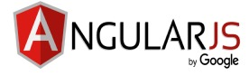

FRAMEWORK JAVASCRIPT
3 Framework Javascript terbaik 2023
Framework Javascript adalah sebuah kerangka untuk mengembangkan website, web app, dan aplikasi dengan
bahasa pemrograman JavaScript.
Dengan menggunakan framework JavaScript, Anda jadi tidak perlu menulis kode JavaScript dari nol
karena bisa menggunakan kerangka
website atau kode dasar yang telah disediakan.
1. Angular JS

Terdapat 3 bagian utama yang menjadi komponen pentingnya, yaitu:
ng-app Arahan dan link dari AngularJS ke HTML.
ng-model - Arahan data dari app AngularJS ke input kontrol HTML.
ng-bind - Arahan data dari app AngularJS ke tag HTML
Fitur-fitur Angular JS:
Directives - Memudahkan dalam mengatur DOM JavaScript, sehingga bisa menghasilkan konten berformat
HTML yang lebih dinamis.
Hierarchical Injections - Memudahkan pengelolaan kode untuk pengujian dan penggunaan ulang
Two-way Data Binding - Memudahkan sinkronisasi antara model dan view.
Scope - Objek yang menampung data Model berisi Method atau perantara antara Controller dan View.
Controller - Mengontrol data dan alur kerja pada program yang sedang dibangun, berisi kumpulan
fungsi-fungsi JavaScript yang dibuat di AngularJS.
Services - Objek yang dapat digunakan di sebuah aplikasi untuk membuat XMLHttpRequest.
Filters - Menyortir item atau fungsi kode.
Directives - Digunakan untuk membuat tag pada HTML.
Template - Tampilan program dengan yang sedang dibuat berdasarkan Controller dan Model.
Kelebihan Angular JS
AngularJS dengan TypeScript memiliki konsep Object Oriented Programming atau berbasis objek,
sehingga proses menjadi fleksibel dan jauh lebih mudah dikelola.
Kekurangan Angular JS
Aturan penulisan kode cukup rumit, sehingga agak sulit bagi pemula.
Struktur aplikasi yang dihasilkan cenderung lebih rumit, sehingga bisa menurunkan kinerja aplikasi.